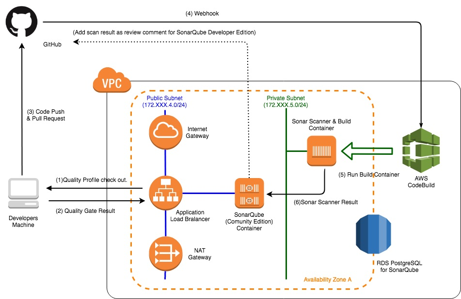

JSUG 勉強会
AWSで作るクラウドネイティブアプリケーションの基本とDevOps
2019.9 @KoheiKawabata
自己紹介

本日のトピックス


How to use this slide
-
「reveal.js」を使って、GitHub Pages上に作成
- 黄色の文字はリンク
- ESCキーを押すとスライドのオーバービュー
- Altキー + マウスクリックで拡大ズーム
- J,K,M,Lキーでも遷移(Vimユーザ朗報)
- 幾つかのスライドは下に遷移
Article Topics
AWSクラウドでよく利用される基本的なサービスの構築方法や、SpringBootをベースとしたアプリケーションを実装する際の基本事項をまとめた連載記事
サーバレス編

ECSコンテナ編

S3編

STSを使ったクライアントからのS3へのファイルアップロード・ダウンロード

SQS編(今月から)

- SQS+SpringCloudAWSを使用したオンライン非同期処理パターン(Producer)
- ディレードバッチやクラウドサービスイベントトリガーパターン
- SQS+SpringCloudAWS+SpringBatch+ECSTaskScheduler(Consumer)
- 今のところ実装のみ作成
Article Topics
マイクロサービスアーキテクチャアプリケーションでDevOpsや基盤自動化する際の基本事項をまとめた連載記事
クラウドネイティブ記事のECSコンテナ編の環境でマイクロサービスなアプリケーションを構築した想定

CI - 静的チェックツール環境の導入編 -

CI - SpringBootテストコード実装編 -

CI - AWS CodeBuildによるCI実践編 -
CI - AWS CodeBuildによるCI実践編 -
ブランチ戦略

CI - AWS CodePipelineによるCD実践編 -

CD - AWS CodePipelineによるパイプライン1 -

CD - AWS CodePipelineによるパイプライン2 -

CD - AWS CodePipelineによるパイプライン3 -
CD - AWS CodePipelineによるパイプライン4 -
CD - AWS CodePipelineによるパイプライン5 -

CD - AWS CodePipelineによるパイプライン6 -

CD - AWS CodePipelineによるパイプライン7 -

CD - AWS CodePipelineによるパイプライン8 -

記事の背景
- ここ最近で支援したAWSプロジェクトで実装、R&D検証した内容を汎用化
- 幾つかのテーマにAWSソリューションアーキテクトとも議論
public class HelloWorld {
public static void main(String[] args) {
System.out.println("Hello World!");
}
}